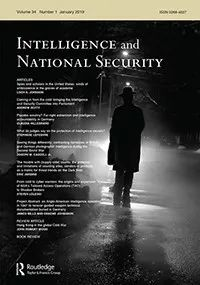

收录于合集

期刊简介

《情报与国家安全》关注情报和秘密机构在国际关系中的作用。本刊以全球领先的学术研究为基础，从多个角度对国家安全进行研究。期刊涵盖的主题包括：情报机构的历史发展；公众对情报的理解和期望；情报与伦理；情报收集和分析；秘密行动和反情报；政治在情报活动中的作用；国际情报合作；军事组织和民用政策部门之间的关系。该刊物2019年影响因子为0.481。
本期编委
【编译】 李雯珲 樊华 阮含含
【审校】 丁伟航 朱文菡
【排版】 高思慧
本期目录
- 卢比孔行动：德国是情报大国吗？
Operation Rubicon: Germany as an intelligence ‘Great Power’?
- D部门：卢比孔行动和中央情报局秘密的信号情报帝国
Division D: operation Rubicon and the CIA’s secret SIGINT empire
- 麦格思维特联盟：基于荷兰视角的欧洲信号情报合作
Maximator: European signals intelligence cooperation, from a Dutch perspective
4. 反思美国“第三选择”的伦理与效力：秘密行动与美国对外政策
Reflections on the ethics and effectiveness of America’s ‘third option’: covert action and U.S. foreign policy
5. 《信息自由法》之下国家安全学者的“报警器”作用
FOIA and the national security scholar as fire alarm oversight
- 战略情报: 一种集中和分散的情报模式
Strategic intelligence: a concentrated and diffused intelligence model
- 国防组织中的情报：一项绝学
Intelligence in defence organizations: a tour de force
8. 安全、丑闻与1981年安全委员会报告
Security, scandal and the security commission report, 1981
01
卢比孔行动：德国是情报大国吗？
【题目】 Operation Rubicon: Germany as an intelligence ‘Great Power’?
【作者】 Melina J. Dobson（白金汉大学）
【摘要】 卢比孔行动可能是我们这个时代最成功的情报行动之一。最近的新闻披露详细说明了德国联邦国民议会（BND）和美国中央情报局（CIA）之间的秘密合作关系，重点是收购和控制克里普陀股份公司（Crypto AG）。在西门子等德国技术巨头的支持下，该公司出售并生产了受损的密码机。本文挑战了将冷战期间的信号情报大国限于“盎格鲁圈”内的观点，提出根据卢比孔行动的证据表明情报中心“另有所在”。它还探讨了德国参与卢比孔行动的复杂伦理意义。
- 克里普陀公司（Crypto AG）是一家瑞士通讯密码设备公司，1952年的二战后改组设立，销售加密法设计服务和相关加密设备。该公司于1952年至1992年的四十年间受到美国中央情报局与德国联邦情报局的直接控制。德国退出该情报项目后，美国中央情报局单独控制该公司直至2018年。
【原文】
Operation Rubicon was probably one of the most successful intelligence operations of our time. Recent press revelations detail this secret partnership between the German Bundesnachrichtendienst (BND) and the American Central Intelligence Agency (CIA), focused on the purchase and control of Crypto AG. Supported by German technical giants like Siemens, the company sold and produced compromised cypher machines. This article challenges the idea that the dominant sigint powers were within the Anglosphere during the Cold War. Instead suggesting Rubicon evidences that the centre of gravity for intelligence lay ‘elsewhere’. It also explores the complex ethical implications of Germany’s involvement in Rubicon.
【编译】 丁伟航
02
D部门：卢比孔行动和中央情报局秘密的信号情报帝国
【题目】 Division D: operation Rubicon and the CIA’s secret SIGINT empire
【作者】 Sarah Mainwaring（沃里克大学）
【摘要】 美国中央情报局（CIA）是情报历史学家研究的热门主题。它以秘密行动和人类情报行动而闻名，我们对它们如何被编织进世界历史的挂毯非常了解。最近，科技情报成为中心主题，揭露了作品《兰利奇才》（注：美国中央情报局科技分局内幕）。这部著作表明我们还有很多东西要学习。探究中情局在通信情报方面的历史性兴趣，它揭示了他们如何控制世界上相当大比例的通信系统。美国中情局（CIA）与国家安全局（NSA）相互独立地在国际上开展工作，是一直影响到21世纪的重要系统。
【原文】
The CIA is a popular topic of study for intelligence historians. Renowned for covert action and human intelligence operations, we know a lot about how they became woven into the tapestry of world history. More recently, scientific and technical intelligence emerged as a central theme, uncovering the work of the ‘Wizards of Langley’. This article suggests we still have much to learn. Exploring CIA’s historic interest in communications intelligence, it uncovers ways they controlled a significant proportion of the world’s communications systems. Working internationally, and disagreeing with NSA, the CIA influenced important systems well into the twenty first century.
【编译】 丁伟航
03
麦格思维特联盟：基于荷兰视角的欧洲信号情报合作
【题目】 Maximator: European signals intelligence cooperation, from a Dutch perspective
【作者】 Bart Jacobs（荷兰拉德堡德大学）
【摘要】 本文是第一个针对麦格斯维特联盟的报告，该信号情报联盟包括五个欧洲国家，始于20世纪70年代。本文揭示了该联盟的名称，并且提供了档案证据。该联盟的五个成员国为丹麦、瑞典、德国、荷兰和法国。它们的合作内容包括信号分析和密码分析。与盎格鲁- 撒克逊“五眼联盟”颇为高调的作风不同，麦格思维特联盟在近五十年的时间里保持高度机密。这一欧洲信号情报联盟的存在为我们审视20世纪下半叶的西方信号情报合作提供了新颖的视角。本文着重关注了密码设备，揭示了五个成员国如何利用德国提供的被操纵的设备信息和美德联合控制的瑞士克里普陀公司密码设备企业来提高情报合作效率。
【原文】
This article is first to report on the secret European five-partner sigint alliance Maximator that started in the late 1970s. It discloses the name Maximator and provides documentary evidence. The five members of this European alliance are Danmark, Sweden, Germany, the Netherlands, and France. The cooperation involves both signals analysis and crypto analisis. The Maximator alliance has remained secret for almost fifty years, in contrast to its Anglo- Saxon Five-Eyes counterpart. The existence of this European sigint alliance gives a novel perspective on western sigint collaborations in the late twentieth century. The article explains and illustrates, with relatively much attention for the cryptographic details, how the five Maximator participants strengthened their effectiveness via the information about rigged cryptographic devices that its German partner provided, via the joint U.S.-German ownership and control of the Swiss producer Crypto AG of cryptographic devices.
【编译】 李雯珲
04
反思美国“第三选择”的伦理与效力：秘密行动与美国对外政策
【题目】 Reflections on the ethics and effectiveness of America’s ‘third option’: covert action and U.S. foreign policy
【作者】 Loch K. Johnson（乔治亚大学）
【摘要】 为了实现外交政策目标，美国时不时地转向第三种选择，即介于外交和战争之间的途径。这种选择更广泛地被称为秘密行动（CA）或“特殊活动”，意思是暗中干预其他国家的事务。这包含了一系列激进的举措，从秘密宣传行动到政治和经济活动，以及（极端的）准军事攻击和暗杀。本文探讨了秘密行动的法律基础，以及这些方法应受问责的程度；它在世界各地的成功和失败；而且，贯穿整个分析的核心，是使用第三种选择所带来的伦理问题。
【原文】
The United States has turned periodically to a Third Option in the pursuit of foreign policy objectives, a pathway between diplomacy and war-fighting. This option is known more widely as covert action (CA) or “special activities,” meaning hidden interventions into the affairs of other nations. Within this rubric are a range of aggressive initiatives, from secret propaganda operations to political and economic activities, as well as (at the extreme) paramilitary attacks and assassinations. This chapter explores the legal foundations of covert action, along with the degree to which these methods are subjected to accountability; its successes and failures around the world; and, central throughout the analysis, the ethical issues posed by use of the Third Option.
【编译】 李雯珲
05
《信息自由法》之下国家安全学者的“报警器”作用
【题目】 FOIA and the national security scholar as fire alarm oversight
【作者】 Tuan N. Samahon（维拉诺瓦大学）
【摘要】 在《信息自由法》的规定下，国会可以因为需要一个“报警器”而授权第三方机构来进行情报监督。《信息自由法》授权申请人可以起诉联邦机构以确保他们配合申请人提取政府机构记录的要求。本文通过为菲佛（Pfeiffer）的《猪湾行动——CIA行动史（草稿第五卷）》所提起的诉讼，考察了司法审查和国家安全学者作为“报警器”的作用。以此为例，本文说明，因为学者，尤其是历史学家，喜欢通过司法监督来促进执行机构的透明度，所以请求者（即国会，译者注）和法院可以通过游说学者来弥补这一合规性缺口。
【原文】
Congress may engage in intelligence oversight by authorizing third-party requesters as ‘fire alarms’ to promote transparency under the Freedom of Information Act (FOIA). FOIA authorizes requesters to sue federal agencies to ensure their cooperation with requests for agency records. This article considers judicial review and the national security scholar’s role as fire alarm oversight by examining the litigation for the Pfeiffer Bay of Pigs CIA operation history, draft volume V. The article illustrates a compliance gap that requesters and courts can close by canvassing the advantages that scholars, especially historians, enjoy in enabling judicial oversight that promotes executive agency transparency.
【编译】 樊华
06
战略情报: 一种集中和分散的情报模式
【题目】 Strategic intelligence: a concentrated and diffused intelligence model
【作者】 Avner Barnea（以色列海法大学）
【摘要】 政府层面的战略情报学和竞争情报学都是为避免错误和防止战略意外而被接受的决策支持方法。到目前为止，研究主要集中在国家情报和商业情报两个方面，但是，利用商业领域积累的经验来改善国家安全方面的情报实践是可能的，反之亦然。本文的主要创新之处在于提出一个新的模型以便于二者之间的相互学习，该模型区分了“集中意外”和“分散意外”，从而为更好地预测意外事件的发展提供了情报领域的突破。
【原文】
Both the discipline of strategic intelligence at the governmental level and the competitive intelligence discipline constitute accepted methods of supporting decision in order to avert mistakes and prevent strategic surprise. So far, research has focused on national intelligence and intelligence in business separately however, it is possible to use experience accumulated in the business field to improve intelligence practice in national security and vice versa, The central innovation of this article is that mutual learning can be utilized in the context of a model that makes a distinction between a ‘concentrated surprise’ and a ‘diffused surprise’ to provide a breakthrough in the intelligence field for better prediction of the development of surprises.
【编译】 樊华
07
国防组织中的情报：一项绝学
【题目】 Intelligence in defence organizations: a tour de force
【作者】 Sebastiaan Rietjens（荷兰国防学院）
【摘要】 国防组织中的情报被普遍视为一个研究不足的主题。本文重新评估了这一说法，并使用后设意见（meta- review）或元分析，系统分析了在2009年—2018年间聚焦于国防组织的情报研究的文献。这一文献回顾包含13个在情报研究（例如情报与国际安全）、军事研究（例如小规模战争与叛乱）、冲突与和平研究（例如战略研究杂志）等领域的主要期刊。该分析提供了有关重点领域，时间框架和被解决的冲突及作者对此的见解。基于此，本文为国防组织内部情报的进一步研究提供了建议。
【原文】
Intelligence in defence organizations is widely seen as an under-researched topic. This paper assesses this claim and, by means of a meta review, systematically analyses the body of literature that has focused on intelligence in defence organizations between 2009 and 2018. The review includes 13 key journals on intelligence studies (e.g., Intelligence and National Security),military studies (e.g., Small Wars and Insurgencies) and conflict and peace studies (e.g., Journal of Strategic Studies). The analysis provides insight on the focus areas, the timeframes and conflicts that are addressed as well as the authors involved. Based on this, the paper provides suggestions for further research into intelligence within defence organizations.
【编译】阮含含
08
安全、丑闻与1981年安全委员会报告
【题目】 Security, scandal and the security commission report, 1981
【作者】 Daniel W. B. Lomas（索尔福德大学）
【摘要】 本研究报告主要介绍1981年12月的安全委员会报告。这份报告从未公开，但其主要结论构成了首相撒切尔夫人（Margaret Thatcher）于1982年5月发表声明的基础。由于各种原因，1981年的报告意义重大。这是自1961年的《拉德克利夫报告》之后，第一份对政府安全进行重大审查的报告，得出的结论和建议改变了19世纪80年代的政府审查工作。该报告还建议公开英国的对外情报机构——这一建议尤其引起重大争议。
【原文】
This research note introduces the December 1981 report of the Security Commission. This report was never released with the main conclusions forming the basis of a statement by Prime Minister Margaret Thatcher, published in May 1982. But the 1981 report is significant for a number of reasons. It was the first major review of government security since the Radcliffe Report of 1961, resulting in a number of recommendations that changed government vetting for the rest of the 1980s. The report also recommended the avowal of Britain’s foreign intelligence agency – a recommendation that proved especially controversial.
【编译】 阮含含

添加 “国小政”微信，获取最新资讯


好好学习，天天“在看”